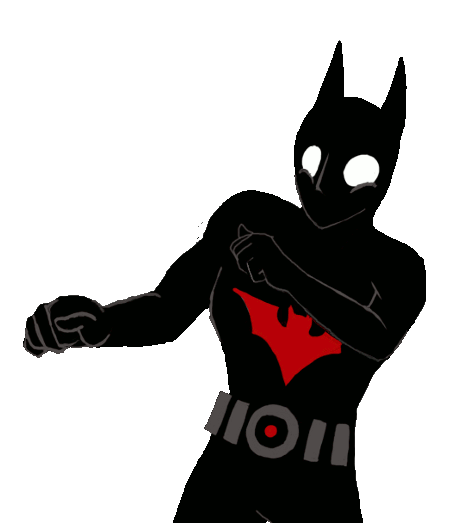

BATMAN
FAN
Batman serisinin ilk filmi "BATMAN" 1989 yýlýnda sinemalara girmiþtir.
Filmi Full Ýzlemek Ýçin Buraya Týklayýnýz!!
Batman serisinin ikinci filmi "BATMAN DÖNÜYOR"
1992 yýlýnda sinemalara girmiþtir.
Filmi Full Ýzlemek Ýçin Buraya Týklayýnýz!!
Batman serisinin üçüncü filmi "BATMAN DAÝMA"
1995 yýlýnda sinemalara girmiþtir.
Filmi Full Ýzlemek Ýçin Buraya Týklayýnýz!!
Batman serisinin dördüncü filmi "BATMAN & ROBÝN"
1997 yýlýnda sinemalara girmiþtir.
Filmi Full Ýzlemek Ýçin Buraya Týklayýnýz!!
Batman serisinin beþinci filmi "BATMAN BAÞLIYOR"
2005 yýlýnda sinemalara girmiþtir.
Filmi Full Ýzlemek Ýçin Buraya Týklayýnýz!!
Batman serisinin altýncý filmi "KARA ÞOVALYE"
2008 yýlýnda sinemalara girmiþtir.
Filmi Full Ýzlemek Ýçin Buraya Týklayýnýz!!
Batman serisinin yedinci filmi "KARA ÞOVALYE YÜKSELÝYOR"
2012 yýlýnda sinemalara girmiþtir.
Filmi Full Ýzlemek Ýçin Buraya Týklayýnýz!!
Batman serisinin sekizinci ve son filmi "Batman ve SUPERMAN:ADALETÝN ÞAFAÐI"
2016 yýlýnda sinemalara girmiþtir.
Filmi Full Ýzlemek Ýçin Buraya Týklayýnýz!!
